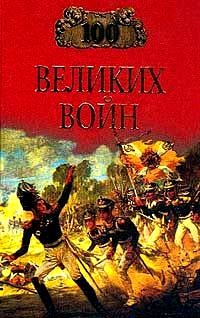

Великие войны человечества

Всю историю человечества, от первых цивилизаций Древнего Востока до наших дней, сопровождают войны. Вооруженные конфликты между государствами и народами полыхали на всех континентах, гражданские войны раздирали общества многих стран. Эта книга расскажет о ста самых великих войнах, об их причинах, ходе и последствиях. Полководческие таланты и бездарности, слава и бесчестие, триумфы и поражения, тяготы военных будней и надежды на мир. Поистине это вечные сюжеты для всех времен и народов!
"100 великих войн".
ВОЙНА ЕГИПТА С ПЛЕМЕНАМИ ПАЛЕСТИНЫ (1472–1460 гг. до н. э.).
ЕГИПЕТСКО-ХЕТТСКИЕ ВОЙНЫ (конец XIV — начало XIII века до н. э.).
ВОЙНА ЕГИПТА С «НАРОДАМИ МОРЯ» (конец XIII–XII век до н. э.).
ЗАВОЕВАНИЯ КИРА ВЕЛИКОГО (VI век до н. э.).
ГРЕКО-ПЕРСИДСКИЕ ВОЙНЫ (495–449 годы до н. э.).
ПЕЛОПОННЕССКАЯ ВОЙНА (431–404 годы до н. э.).
КОРИНФСКАЯ ВОЙНА (399–387 годы до н. э.).
БЕОТИЙСКАЯ ВОЙНА (378–362 годы до н. э.).
ВОЙНЫ АЛЕКСАНДРА МАКЕДОНСКОГО (334–323 годы до н. э.).
ВОЙНЫ ДИАДОХОВ (323–281 годы до н. э.).
САМНИТСКИЕ ВОЙНЫ (343–290 годы до н. э.).
ПУНИЧЕСКИЕ ВОЙНЫ (264–241, 218–201 и 149–146 годы до н. э.).
РИМСКО-МАКЕДОНСКИЕ ВОЙНЫ (215–168 годы до н. э.).
РИМСКО-СИРИЙСКАЯ ВОЙНА (192–188 годы до н. э.).
ГРАЖДАНСКИЕ ВОЙНЫ В РИМЕ (I век до н. э.).
РИМСКО-ГАЛЛЬСКИЕ ВОИНЫ (I век до н. э.).
РИМСКО-ПАРФЯНСКИЕ ВОЙНЫ (I в. до н. э. — II в. н. э.).
РИМСКО-ГЕРМАНСКИЕ ВОИНЫ (конец I века до н. э. — II век н. э.).
ВОЙНЫ РИМА С ИУДЕЯМИ (66–73, 132–135 годы).
РИМСКО-ПЕРСИДСКИЕ ВОЙНЫ (начало III — начало V века).
ВОЙНЫ РИМА С ВАРВАРАМИ В ЭПОХУ «ВЕЛИКОГО ПЕРЕСЕЛЕНИЯ НАРОДОВ» (конец ІV века — V век).
ВИЗАНТИЙСКО-ГОТСКИЕ ВОЙНЫ (VI век).
ВИЗАНТИЙСКО-ПЕРСИДСКИЕ ВОЙНЫ (VI–VII века).
ВИЗАНТИЙСКО-АРАБСКИЕ ВОЙНЫ (VII–IX века).
АРАБСКИЕ ЗАВОЕВАНИЯ (VII–VIII века).
ВОЙНЫ КАРЛА ВЕЛИКОГО (вторая половина VIII — начало IX века).
ЗАВОЕВАНИЯ ВИКИНГОВ (конец VIII — середина XI века).
ГЕРМАНО-ВЕНГЕРСКИЕ ВОЙНЫ (X век).
РУССКО-ВИЗАНТИЙСКИЕ ВОЙНЫ (IX–X века).
ВИЗАНТИЙСКО-БОЛГАРСКИЕ ВОЙНЫ (X — начало XI века).
ГЕРМАНО-ИТАЛЬЯНСКИЕ ВОЙНЫ (середина X — конец XII века).
ЗАВОЕВАНИЕ АНГЛИИ ВИЛЬГЕЛЬМОМ НОРМАНДСКИМ (1066 г.).
КРЕСТОВЫЕ ПОХОДЫ (конец XI — конец XIII века).
МОНГОЛЬСКОЕ ЗАВОЕВАНИЕ ЕВРОПЫ И АЗИИ (XIII — начало XV века).
ЗАВОЕВАНИЕ ПРУССИИ ТЕВТОНСКИМ ОРДЕНОМ (XIII век).
ВОЙНЫ НОВГОРОДСКОЙ ЗЕМЛИ С ШВЕЦИЕЙ И ЛИВОНСКИМ ОРДЕНОМ (XIII век).
ФРАНЦУЗСКО-ФЛАМАНДСКИЕ ВОЙНЫ (конец XIII — начало XIV века).
АВСТРО-ШВЕЙЦАРСКИЕ ВОЙНЫ (XIV век).
СТОЛЕТНЯЯ ВОЙНА (1337–1453 годы).
ЗАВОЕВАНИЕ ТУРКАМИ-ОСМАНАМИ БАЛКАНСКОГО ПОЛУОСТРОВА (XIV–XV века).
ЗАВОЕВАНИЯ ТИМУРА (вторая половина XIV–XV век).
ВОЙНЫ ПОЛЬШИ С ТЕВТОНСКИМ ОРДЕНОМ (конец XIV–XV век).
ГУСИТСКИЕ ВОЙНЫ (1419–1435 годы).
ШВЕЙЦАРСКО-БУРГУНДСКАЯ ВОЙНА (1474–1477 годы).
РУССКО-ЛИТОВСКИЕ ВОЙНЫ (конец XV — начало XVI века).
ИТАЛЬЯНСКИЕ ВОЙНЫ ФРАНЦИИ И ИСПАНИИ (конец XV–XVI век).
ВОЙНЫ РУСИ С КАЗАНСКИМ ХАНСТВОМ (1521–1552 годы).
ВОЙНЫ ГОСУДАРСТВА ВЕЛИКИХ МОГОЛОВ (XVI–XVII века).
ЛИВОНСКАЯ ВОЙНА (1558–1583 годы).
РЕЛИГИОЗНЫЕ ВОЙНЫ ВО ФРАНЦИИ (1562–1598 годы).
ВОЙНА ЗА НЕЗАВИСИМОСТЬ ИСПАНСКИХ НИДЕРЛАНДОВ (1566–1609 годы).
АНГЛО-ИСПАНСКАЯ ВОИНА (1586–1589 годы).
ЯПОНО-КОРЕЙСКАЯ ВОЙНА (1592–1598 годы).
РУССКО-ПОЛЬСКИЕ ВОЙНЫ (XVII век).
ПОЛЬСКО-УКРАИНСКИЕ ВОЙНЫ (первая половина XVII века).
ТРИДЦАТИЛЕТНЯЯ ВОЙНА (1618–1648 годы).
ГРАЖДАНСКАЯ ВОЙНА В АНГЛИИ (1642–1652 годы).
МАНЬЧЖУРСКОЕ ЗАВОЕВАНИЕ КИТАЯ (1640-е годы).
АНГЛО-ГОЛЛАНДСКИЕ ВОЙНЫ (1652–1674 гг.).
СЕВЕРНАЯ ВОЙНА (1700–1721 гг.).
ВОЙНА ЗА ИСПАНСКОЕ НАСЛЕДСТВО (1701–1714 годы).
РУССКО-ТУРЕЦКИЕ ВОЙНЫ (XYIII–XIX века).
ВОЙНА ЗА АВСТРИЙСКОЕ НАСЛЕДСТВО (1740–1748 годы).
СЕМИЛЕТНЯЯ ВОЙНА (1756–1763 годы).
ВОЙНА ЗА НЕЗАВИСИМОСТЬ БРИТАНСКИХ КОЛОНИЙ В СЕВЕРНОЙ АМЕРИКЕ (1775–1783 годы).
ВОЙНЫ ЭПОХИ ВЕЛИКОЙ ФРАНЦУЗСКОЙ РЕВОЛЮЦИИ (1792–1815 годы).
АНГЛО-АМЕРИКАНСКАЯ ВОЙНА (1812–1815 годы).
РУССКО-ИРАНСКИЕ ВОЙНЫ (1804–1813, 1826–1828 годы).
КАВКАЗСКАЯ ВОЙНА (1817–1864 годы).
АМЕРИКАНО-МЕКСИКАНСКАЯ ВОЙНА (1846–1848 годы).
КРЫМСКАЯ ВОЙНА (1853–1856 годы).
АВСТРО-ФРАНКО-САРДИНСКАЯ ВОЙНА (1859 год).
ГРАЖДАНСКАЯ ВОЙНА В США (1861–1865 годы).
АВСТРО-ПРУССКАЯ ВОЙНА (1866 год).
ФРАНКО-ПРУССКАЯ ВОЙНА (1870–1871 годы).
ИСПАНО-АМЕРИКАНСКАЯ ВОЙНА (1898 год).
АНГЛО-БУРСКАЯ ВОЙНА (1899–1902 годы).
РУССКО-ЯПОНСКАЯ ВОЙНА (1904–1905 гг.).
ИТАЛО-ТУРЕЦКАЯ ВОЙНА (1911–1912 годы).
БАЛКАНСКИЕ ВОЙНЫ (1912–1913 годы).
ПЕРВАЯ МИРОВАЯ ВОЙНА (1914–1918 годы).
ГРАЖДАНСКАЯ ВОЙНА В РОССИИ (1917–1922 годы).
ГРЕКО-ТУРЕЦКАЯ ВОЙНА (1919–1922 годы).
ГРАЖДАНСКАЯ ВОЙНА В ИСПАНИИ (1936–1939 гг.).
СОВЕТСКО-ЯПОНСКИЕ ВОЕННЫЕ КОНФЛИКТЫ У ОЗЕРА ХАСАН И У РЕКИ ХАЛХИН-ГОЛ (1938–1939 годы).
ВТОРАЯ МИРОВАЯ ВОЙНА (1939–1945 годы).
СОВЕТСКО-ФИНСКАЯ ВОЙНА (1939–1940 годы).
ВОЙНА В ИНДОКИТАЕ (1945–1975 гг.).
ИНДО-ПАКИСТАНСКИЕ ВОЙНЫ (1948–1949, 1965, 1971).
АРАБО-ИЗРАИЛЬСКИЕ ВОЙНЫ (1948–1982 годы).
КОРЕЙСКАЯ ВОЙНА (1950–1953 годы).
ВОЙНА В АЛЖИРЕ (1954–1962 годы).
АФГАНСКАЯ ВОЙНА (1979–1989 годы).
ИРАНО-ИРАКСКАЯ ВОЙНА (1980–1988 годы).
АНГЛО-АРГЕНТИНСКАЯ (ФОЛКЛЕНДСКАЯ) ВОЙНА (1982 год).
ВОЙНА КОАЛИЦИИ ПРОТИВ ИРАКА (1990–1991 годы).
РУССКО-ЧЕЧЕНСКИЕ ВОЙНЫ (1994–2000 годы).